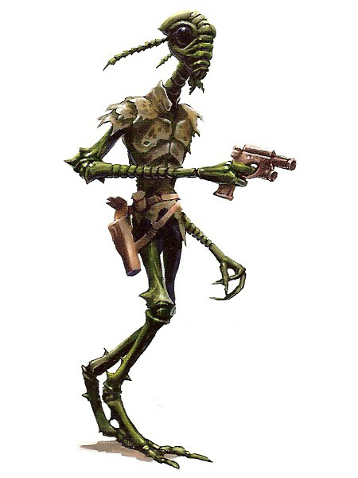

Verpine
verpine
Special Abilities: Verpine begin the game with one rank in Mechanics. They still may not train Mechanics above rank 2 during character creation.
Microvision: The compound eyes of a Verpine are capable of seeing tiny, even microscopic, details. When closely examining an object, Verpine characters add to their Perception checks.
Radio-wave Communication: Verpine can pro duce and hear radio waves, which allows them to silently communicate with other Verpine and specially tuned comlinks within a 100-kilometer range.
The Verpine are a hermaphroditic insectoid species whose affinity for technology is recognized far and wide. As a species, they have little desire for conflict and prefer to resolve differences peacefully whenever possible. While their origins continue to be speculated upon by exobiologists the galaxy over, they are nonetheless considered native to the Roche Asteroid Field—a dense cluster of asteroids that orbit the Roche system’s sun in an uncannily orderly fashion. Though the majority of Verpine prefer to remain in their home system, particularly adventurous or curious individuals make their way in the galaxy by plying their prodigious skills as starship technicians.
The Verpine are a bipedal insectoid species with thin bodies and sticklike limbs. They are quite gangly, and each stands 1.9 meters tall. Their faces are long, with two large black eyes placed above a short snout that terminates in a small, toothless mouth. Two antennae, which act as auditory organs, emerge from the sides of their heads. These antennae are also sensitive to radio-wave transmissions, which Verpine can create organically in order to communicate with other members of their communities. Despite perceptions to the contrary, this form of communication is not telepathic in nature.
Verpine bodies are covered in a flexible, nearly elastic form of chitin. This ''carahide” is typically green, though the specific hue varies from dull olive or brownish-green to a brighter, mossier shade, especially in younger specimens. Despite its relative suppleness, a Verpine’s carahide is incredibly tough, and it acts as a form of natural armor, especially against stabbing and slashing attacks. As a Verpine ages, it sheds older or damaged plates of carahide, which are then replaced by newer ones.
In their movements, Verpine appear to be ungainly, due in large part to their thin, lanky bodies. Their gait, especially in gravity, seems clumsy and belies an inherent quickness that often surprises observers. They function especially well in null gravity given their familiarity with working in such environments. Their faces aren’t particularly expressive, and this, combined with their insectoid body language, often makes them mysterious to people who are unfamiliar with them. Many Verpine in the galaxy attempt to adopt the body language of other species they come into contact with, but this is met with varying degrees of success.
Verpine culture is based on a hive-like model, with each individual contributing to the overall good of its colony. Colonies of Verpine generally consist of between twenty and one hundred individuals, though larger colonies have been known to exceed populations of a thousand. Using their naturally produced radio waves, Verpine are capable of communicating directly with every member of their colony. In this way, each Verpine can voice its opinion in important colony matters. These opinions are then collated and used to determine a specific course of action based on majority rule, typically in an instant. Such decisions are considered binding upon individual Verpine as well as their peers.
Because of their communal decision-making process, Verpine who have sought their fortunes away from their colonies are always interested in the opinions of their friends and associates, especially when important choices must be made. Even mundane decisions can vex a Verpine, and they appear to be nosy as they attempt to gauge the opinions of their companions. Verpine who have joined the Rebel Alliance often find the military chain of command to be difficult to fathom, considering that decisions are made by select individuals and groups rather than by the collective as a whole.
Verpine are largely uninterested in conflict and war. While not pacifists, they prefer negotiation and compromise to violence, and use force only as a last resort. Such attitudes are thought to have their roots in a legendary civil war that allegedly destroyed the Verpine homeworld long ago. Though such an event remains unconfirmed by exobiologists and galactic historians, the Roche Asteroid Field is filled with clues that have led some to believe it was once a single planet.
Verpine are also united in their intense interest in technology. Their species as a whole is unrivaled in its technical expertise, and they are considered some of the best starship engineers in the galaxy. They enjoy tinkering with and "improving” existing pieces of technology and equipment, though the results of their modifications are occasionally undesirable. Despite this foible, Verpine engineers and mechanics are highly sought after by ship captains.
The Verpine come from the Roche system and dwell in the asteroid field of the same name. The Roche Asteroid Field buzzes with activity as Verpine starships and asteroid hoppers industriously flit from one colony to another. The Verpine have created extensive colonies within asteroids of all sizes, subsequently fitting them with life support, artificial gravity, repulsor fields, and other important systems. These mazelike colonies seem disorganized to the uninitiated, but every chamber serves an important purpose to the Verpine.
Because the Verpine have evolved to breathe oxygen, most exobiologists find it difficult to believe that they didn't originate on a terrestrial planet. It has been speculated that the Roche asteroids are the remnants of the Verpine homeworld, which was destroyed in a civil war of some kind. The Verpine refuse to acknowledge such hypotheses and appear to exhibit great shame when asked about this part of their species history.
The Verpine language is known simply as Verpine. It can be spoken physically or transmitted via Verpine radio waves. It is a consonant-heavy language that lends itself well to their insectoid mouthparts, but non-Verpine find it difficult, though not impossible, to speak. In addition, the Verpine can easily learn and speak Basic.
Though the Verpine are supportive of the Rebel Alliance, very few have actively joined the cause to restore the Republic. This is, at least in part, due to their preference for negotiation over violence. It’s not that the Verpine fear the Empire or the consequences of joining the Alliance, but their popular consensus has not yet reached a high enough threshold to change their overall opinion on the subject.
Those Verpine who do join the Alliance often do so in technical roles, especially in the fields of starship engineering and technological R&D. A small handful serve as liaisons and negotiators, while a rare few join active combat units.
The Verpine have long possessed the capacity for interstellar travel. One of their earliest developments involved a gyrostabilization system that ensured a ship’s crew would remain steady while the vessel itself rotated to compensate for navigation through a dense asteroid field. While it remained a standard feature of many Verpine craft, the gyrostabilizer was virtually unknown outside of the Roche Asteroid Field.
As the Rebel Alliance continued to rely on the Verpine for support, the gyrostabilization system caught the eye of several Rebel technicians. It’s rumored that with the help of several sympathetic Verpine, the Rebel Alliance was able to apply the technology to the B-wing starfighter, which has become one of the Rebellion’s most effective vessels.